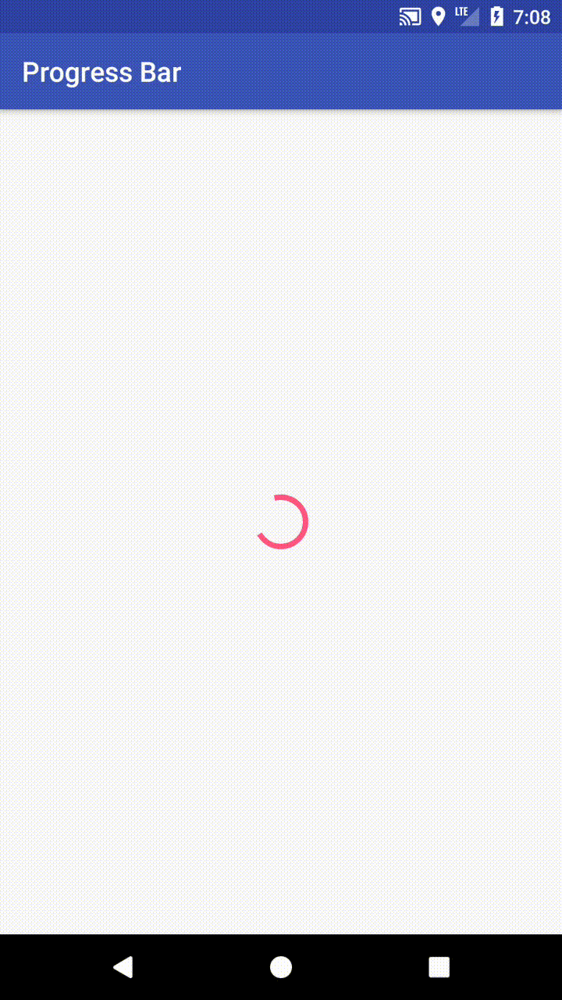

Introduction
ProgressBar是在Android常見的元件，尤其是在materials design上，依照 UI 上顯示的方式，可以初步分類成兩種：
1.Linear長條形
2.Circular圓型
接下來我們來看看如何使用。
Create a Circular Progress Bar
在layout文件下，直接引用ProgressBar
layout:
1 | <ProgressBar |
運行效果如下：

ProgressBar顏色預設是使用**@color/colorAccent，想要改變顏色，需先創建一個新style，並自訂colorAccent**的顏色
styles.xml:
1 | <resources> |
接著在ProgressBar添加屬性android:theme為我們自定義的新style
1 | android:theme="@style/ProgressTheme" |
運行效果如下：
Create a Linear Progress Bar
Linear Progress Bar 依照顯示的型態，又可細分成4項
1.Determinate(定值)
-有定值，顯示在進度條上，需要定義當前值與最大值
2.Indeterminate(不定值)
-無定值，UI顯示上會從進度條開始，快速到結束，重複循環
3.Buffer(緩衝)
-影片或加載圖片很常用到的緩衝進度條，通常是顯示在確定值的後方
4.Query Indeterminate and Determinate (混合)
-結合 Determinate 和 Indeterminate 的進度條
創建一個Linear Progress Bar，方法很簡單，在剛剛創建的ProgressBar添加上一條style屬性，此時就會發現ProgressBar已經顯示為長條形
1 | style="@style/Widget.AppCompat.ProgressBar.Horizontal" |
接著再加上一條屬性android:indeterminate，表示ProgressBar為不定值，會像** Circular Progress Bar ** 一樣，有循環的效果
1 | android:indeterminate="true" |
運行效果如下：
接下來我們來創建 Determinate(定值) ProgressBar
先把屬性android:indeterminate，設為false
1 | android:indeterminate="false" |
接著設定屬性進度值與最大值，Android會自動換算成百分比
1 | android:progress="20" |
當然也可以在代碼裡設定
1 | progressBar.setProgress(20); |
運行效果如下：
使用Buffer(緩衝) ProgressBar，需在ProgressBar裡添加屬性 android:secondaryProgress，就可以在畫面上，看見一條緩衝進度條效果
1 | android:secondaryProgress="40" |
當然也可以在代碼裡設定
1 | progressBar.setSecondaryProgress(40); |
運行效果如下：